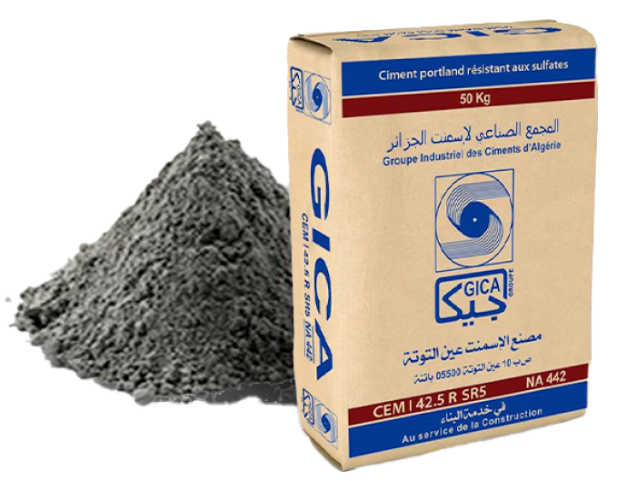
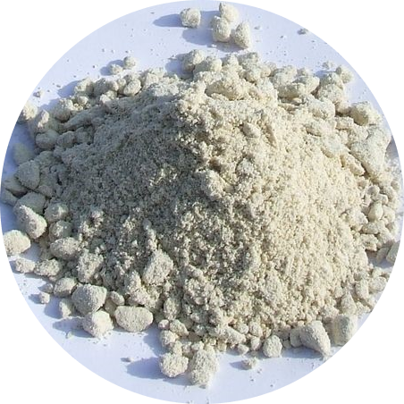
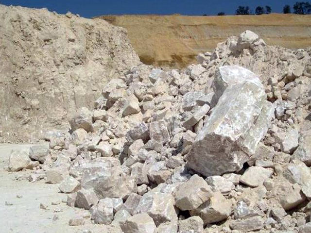

Le Ciment Portland au Calcaire CEM II/A-L 42,5N -NA 442/2013- résulte du mélange du clinker en quantité au moins égale à 88-82 % et d’autres constituants tels que le Tuf & la Pouzzolane dont le total ne dépasse pas 7-13 %
CEM II/A (P-L) 42,5N more details
Le Filler 0/0,063 mm est un granulat fin destiné à remplir, à charger divers produits des industries du BTP
Filler 0/0,063 mm more details
Le Gypse et le Tuf sont utilisés comme ajout cimentier pour la fabrication du ciment 42.5
Gypse et Tuf more details